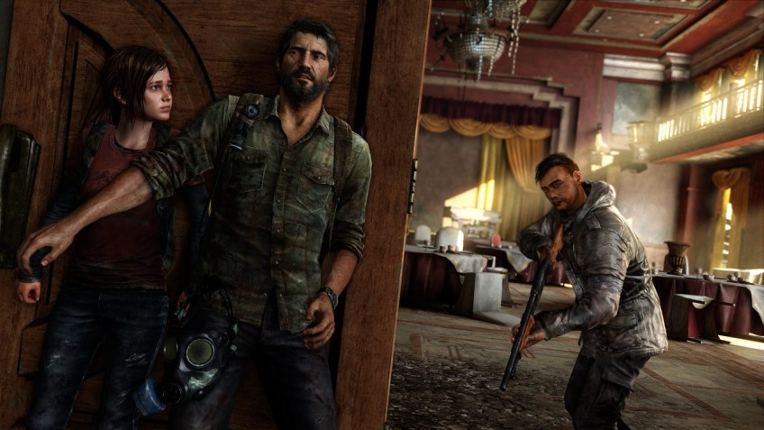

Статья
Самые страшные эпидемии в играх. От NieR до The Last of Us

Пандемия COVID-19 набирает обороты. Многие из нас оказались заперты в собственных домах, обложились гречкой и туалетной бумагой, быстро разобрались, чем респиратор FFP1 отличается от FFP3, и стараются лишний раз не выходить из дома. Со всех сторон заголовки новостей кричат о том, как вирус рушит наш привычный мир.
Но знаете что? В истории можно найти кучу болезней и пострашнее. А уж в играх — тем более.
Представляем вам подборку самых жутких и разрушительных эпидемий в видеоиграх. И если тревожность не даёт вам спокойно спать, советуем запустить любой проект из списка ниже и убедиться, что у нас на сегодняшний день дела обстоят не так уж плохо.
Синдром белой хлоринации. NieR
Все проблемы во вселенной NieR начались, когда из параллельной реальности туда проникла магия. В 2003 году небеса над Токио разверзлись, и на город свалилось гигантское белое существо, вслед за которым из облаков спикировал самый настоящий дракон. В результате нелёгкой битвы дракон уничтожил гиганта,
после чего бравые японские ВВС расстреляли крылатого пришельца.
Казалось бы, всё ограничится разрушенными зданиями и несколькими десятками погибших, но нет. Спустя полгода в районе Синдзюку, где рухнули гости из другого мира, начались вспышки болезни, которую назвали «синдромом белой хлоринации». Она превращала клетки людского организма в хлорид натрия (или попросту соль),
пока человек не рассыпался кучкой белых кристаллов. На первых порах смертность достигала 100%. Потом некоторые заражённые начали выживать, но проявлять неконтролируемую агрессию. Болезнь передавалась в первую очередь через жидкие выделения: если, к примеру, инфицированный покашлял рядом и на тебя попали частички его слюны — ты труп.
Чтобы остановить эпидемию, правительство изолировало Синдзюку, оградив район от остального города высокой стеной. Это не помогло: через четыре года инфицированные пробили стену и хлынули наружу, убивая всех на своём пути и стремительно распространяя болезнь. Армию заражённых назвали Легионом,
и спустя пару лет кровопролитной войны с ней разобрались радикально — ядерными бомбами. Стоит ли говорить, что они превратили Страну восходящего солнца в выжженную пустыню?
Но и это ещё не всё. По иронии судьбы, именно радиоактивные осадки помогли разнести синдром белой хлоринации по всему свету. Только потом учёные выяснили, что болезнь вызывают частицы из другого мира, оставшиеся после гибели белого гиганта, — и они полностью неуязвимы для ядерных атак. Закончилось всё это довольно печально:
на момент начала игры человечество находится на грани полного истребления.
Чёрная смерть. A Plague Tale: Innocence
В играх чуму использовали не раз, но почти везде сценаристы примешивали к реальной болезни фантастический элемент, делая её ещё страшнее.
В A Plague Tale история разворачивается на фоне самой известной пандемии чумы: Чёрной смерти, которая пришлась на XIV век и убила десятки миллионов человек. В игре жителям Франции угрожает не только бубонная чума, но и орды крыс, вызванные загадочным проклятием. Грызуны здесь атакуют целыми лавинами, собираются в «крысовороты» и даже вызывают землетрясения.
В результате получаем грандиозные разрушения, горы трупов и напуганных до полусмерти выживших. Главной героине не раз придётся пробираться по опустевшим улицам некогда цветущих городов и деревушек, а ещё — столкнуться со страхом обывателей, которые готовы сжигать людей заживо, лишь бы не допустить новых заражений.
Пепельная кровь. Bloodborne
Когда-то город Ярнам славился своими целителями, которые обещали излечить чуть ли не любую болезнь с помощью ритуальных переливаний особой крови. Лишь позже выяснилось, что переливания вызывали другую болезнь, куда более страшную — «пепельную кровь», превращающую людей в жутких монстров. К началу игры целые районы Ярнама заражены, изолированы, сожжены или ждут сожжения, а по улицам рыщут охотники на чудовищ.
О симптомах болезни известно немного: проекты Хидэтаки Миядзаки не особенно щедры на подробности и детали. Пепельную кровь на первых порах легко спутать с отравлением, но противоядие приносит лишь временное облегчение. Зараза передаётся с различными выделениями человеческого организма, которые к тому же становятся ядовитыми.
Неудивительно, что пепельная кровь быстро распространилась по городу, очень похожему на викторианский Лондон с его грязными улицами и переполненными сточными канавами.
Долларовый грипп. The Division
«Люди гибнут за металл», — пел Мефистофель в опере Гуно, и сюжету The Division это описание подходит как нельзя лучше. В этой игре люди гибнут даже не за металл, а от металла. Вернее, от хрустящих бумажек, которые давно заменили звонкую монету.
Один слишком идейный вирусолог решил, что планете будет лучше без людей, так что усовершенствовал штамм оспы, а потом нанёс его на долларовые банкноты. Оставив заражённые купюры в магазинах в Чёрную Пятницу, он добился молниеносной вспышки болезни.
Эпидемия уничтожила правительство и за три недели довела США до полной анархии, хаоса и разрухи. Города поделили между собой преступные группировки, которые ради выживания готовы перегрызть глотки не только друг другу, но и всем, кто подвернётся под руку. Виновницу торжества прозвали «зелёной отравой» или «долларовым гриппом» — и это тот редкий случай, когда счастье уж точно не в деньгах.
Кордицепсная церебральная инфекция. The Last of Us
Местная зараза любопытна тем, что основана на реально существующем грибке Сordyceps unilateralis, который паразитирует на насекомых. Проникнув в организм носителя, споры грибка прорастают прямо в нём, пока не поражают нервную систему. После этого жертва становится фактически «рабом» кордицепса и забывает о собственных нуждах, превращаясь в подобие зомби. Взяв за основу этот жутковатый феномен,
сценаристы решили зайти немного дальше — и представили, что бы случилось, если б кордицепс мутировал и начал паразитировать на людях. По их версии, это переросло в пандемию, которая погубила цивилизованный мир и умертвила большую часть человечества.
Основное действие игры разворачивается спустя двадцать лет после первой вспышки инфекции. Опустошённые города потихоньку поглощает лес, немногочисленные выжившие готовы убивать друг друга за еду и боеприпасы. Некоторые не брезгуют даже каннибализмом. В процессе игры не раз задаёшься вопросом, кто страшнее: бедолаги, поражённые кордицепсом, или люди, которые сами отбросили всё человеческое ради выживания.
В наше неспокойное время важно помнить, что люди переживали передряги и потяжелее — что в играх, что в реальности. Главное, берегите себя и своих близких, мойте руки и коротайте самоизоляцию с хорошими играми.